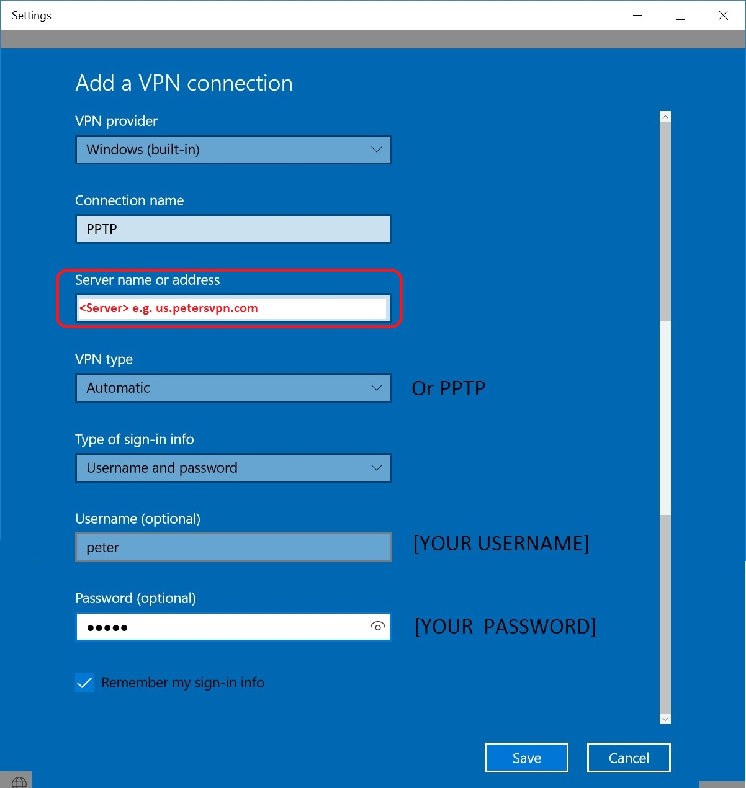
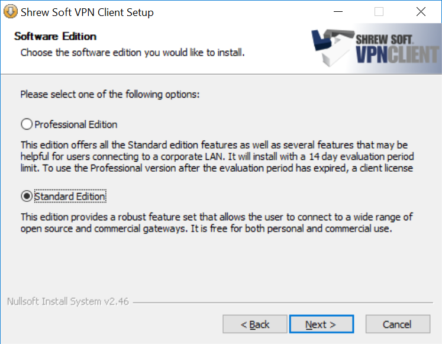

图二：
图三：

图四：

图五：
图六：
图七：
图八：

图九：

图十：

Windows 系统推荐使用以下两种VPN协议。
PPTP： 配置简单，速度还行。
IPSec： 速度快，配置复杂。
配置信息
Windows 7:
Internet地址： usw.petersvpn.com
目标名称： 随意
用户名： [Your account]
密码： [Your password]
其他： 默认
Windows 10:
VPN供应商： Windows (内置)
连接名称： 随意
服务器名称或地址： usw.petersvpn.com
VPN类型： Automatic or PPTP
登录信息的类型： 用户名和密码
用户名： [Your account]
密码： [Your password]
其他： 默认
图一：
图二：
图三：
图四：
图五：
图六：
图七：
图八：
图九：
图十：
To create a new VPN configuration, go to Windows Start > Settings > Network & Internet > VPN.
Click + Add a VPN connection, and follow the screenshots below.

1. 下载并安装免费的 Shrew Soft VPN 客户端 Here。
安装时选择Standard Edition (Free)。
2. 单击开始菜单 -> 所有程序 -> ShrewSoft VPN Client -> VPN Access Manager。
3. 单击工具栏中的 Add (+) 按钮。
4. 在 Host Name or IP Address 字段中输入VPN 服务器地址 usw.petersvpn.com 。
5. 单击 Authentication 选项卡，从 Authentication Method 下拉菜单中选择 Mutual PSK + XAuth。
6. 单击 Credentials 子选项卡，并在 Pre Shared Key 字段中输入petersvpn。
7. 单击 Phase 1 选项卡，从 Exchange Type 下拉菜单中选择 main。
8. 单击 Phase 2 选项卡，从 HMAC Algorithm 下拉菜单中选择 sha1。
9. 单击 Save 保存 VPN 连接的详细信息。
10.选择新添加的 VPN 连接。单击工具栏中的 Connect 按钮。
11. 在 Username 字段中输入你的 VPN 用户名。
在 Password 字段中输入你的 VPN 密码。
单击 Connect。
12. VPN 连接成功后，你会在 VPN Connect 状态窗口中看到 tunnel enabled 字样。单击 "Network" 选项卡，并确认 Established - 1 显示在 "Security Associations" 下面。
13. 断开点击Disconnect.
IPSec 配置截图
Step1:

Step4:
Step5:
Step6:
Step7:
Step8:
Step11:
Step12: